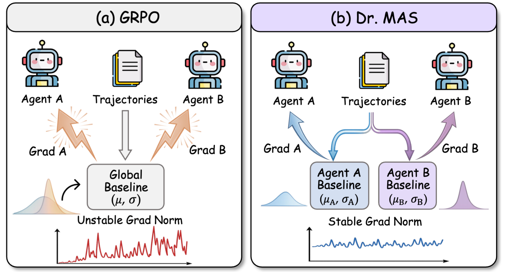
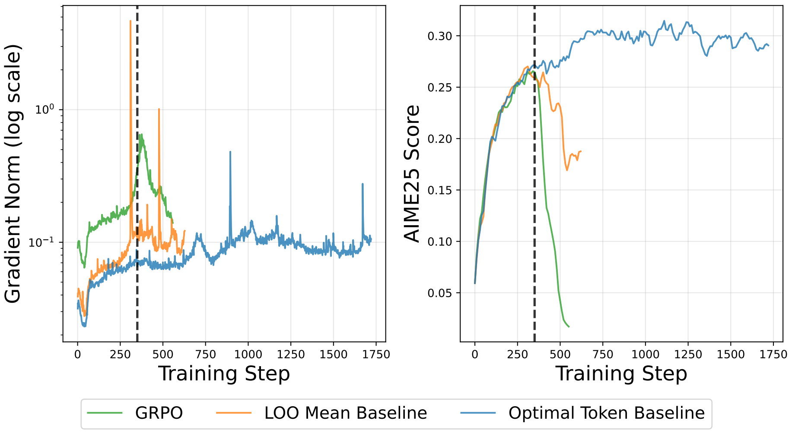
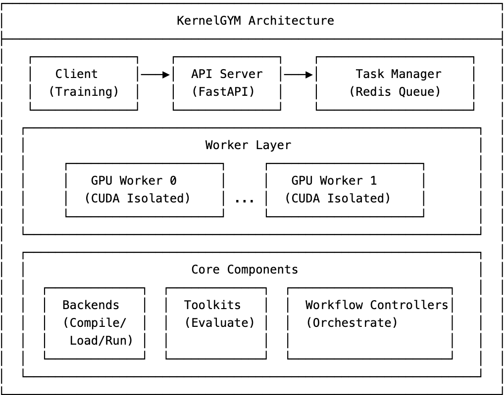
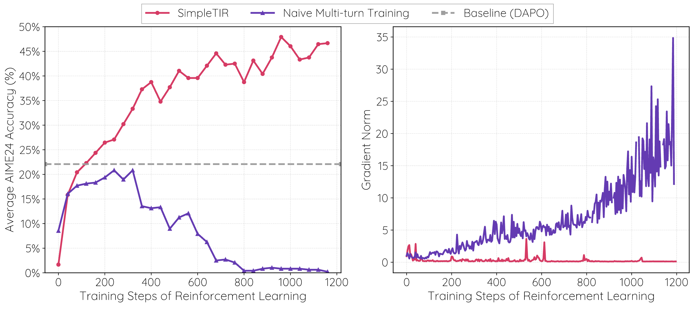
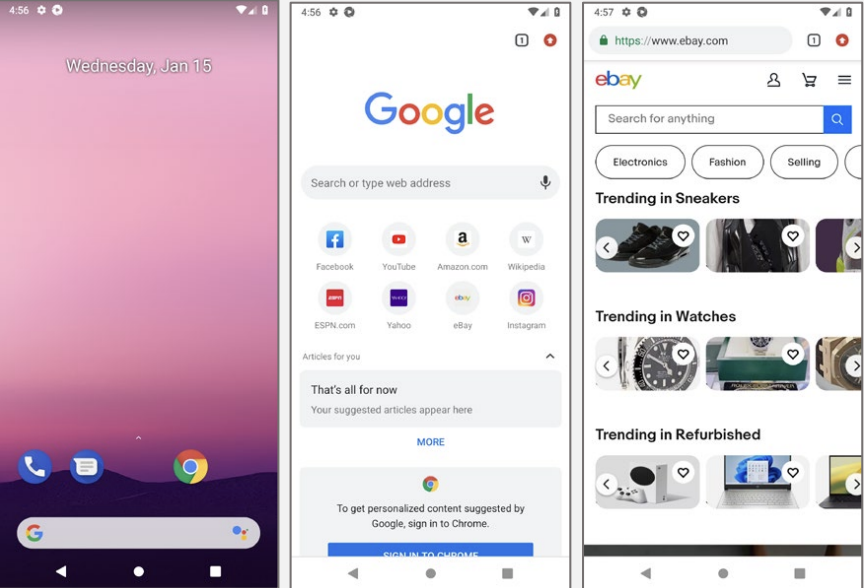
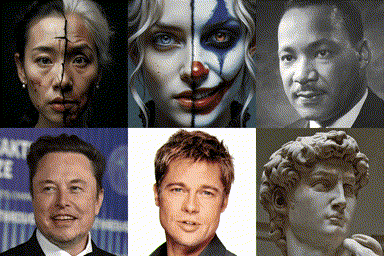
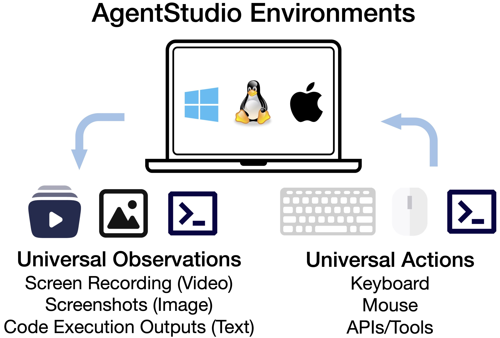
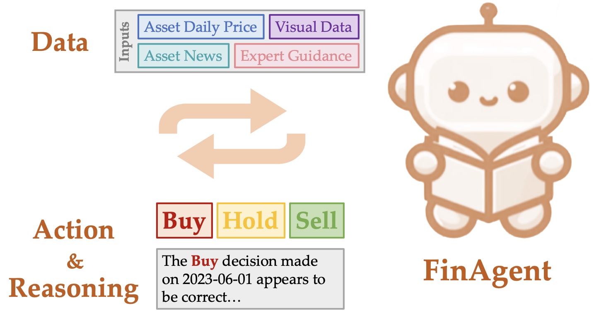
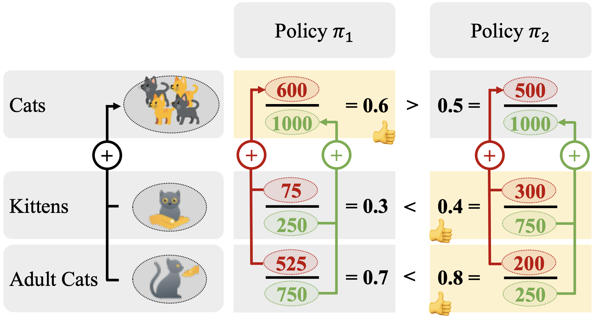
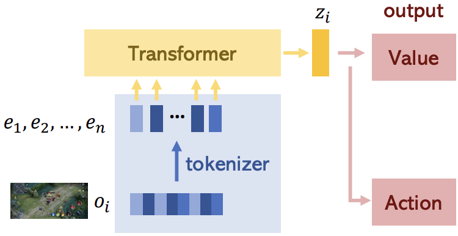

ltzheng01 at gmail dot com
Longtao Zheng is a Researcher at ByteDance, leading RL for coding agents. He was a PhD student at Nanyang Technological University (NTU) Singapore, advised by Prof. Bo An. Previously, he obtained his Bachelor's degree in computer science from University of Science and Technology of China (USTC) in 2022.









